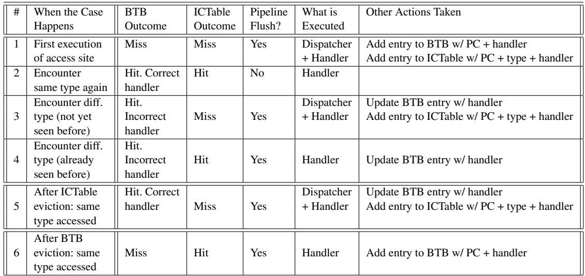
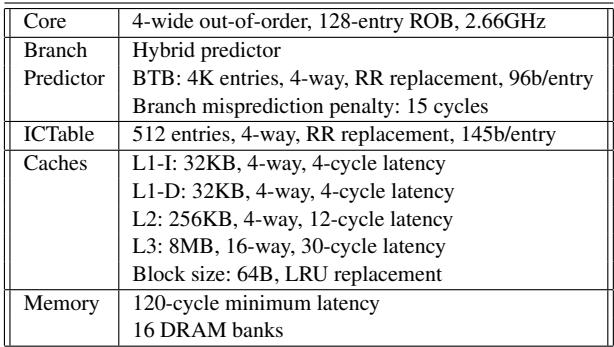
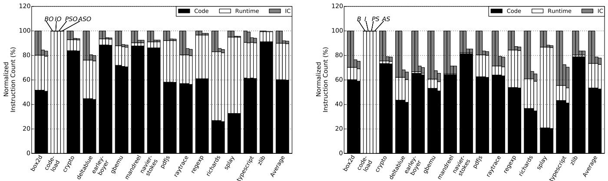
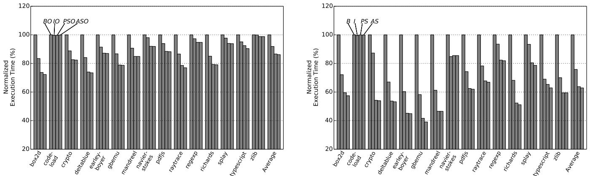
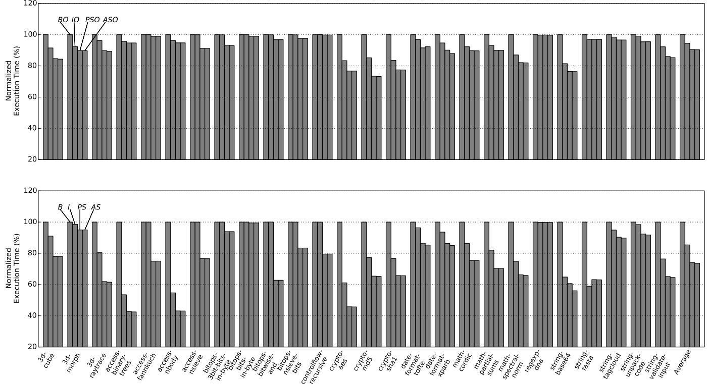
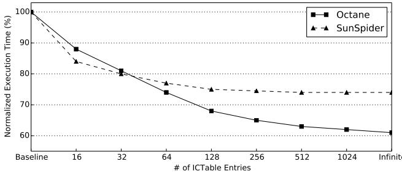

ShortCut: Architectural Support for Fast Object Access in Scripting Languages 图表详解¶
Figure 1: Code generation example with different inline cache implementations.¶

- 图片展示了 JavaScript 中属性访问
obj.x在不同 Inline Cache (IC) 实现下的代码生成示例，旨在说明动态类型语言中对象属性访问的性能开销及优化路径。 - 图 (a) 是原始 JavaScript 代码示例，定义了一个函数
get_x(obj)返回obj.x，并创建了两个不同类型的对象a和b，用于演示 IC 的命中与未命中行为。 - 图 (b) 描述 Inlined Dispatcher：将调度器逻辑直接内联到访问点。代码包含一系列
if-elif-else判断对象类型，匹配后调用对应 Handler。首次访问a或b时为 IC miss，需执行完整判断；第二次访问则为 IC hit，直接跳转 Handler。 - 图 (c) 展示 Custom Dispatcher：访问点仅调用一个特定于该站点的调度器函数
Custom_Dispatcher。该调度器内部同样包含类型判断和跳转逻辑。当新类型出现时，需生成新的调度器并更新调用地址。 - 图 (d) 呈现 Shared Read Dispatcher：所有读取访问点共享一个调度器
Shared_Read_Dispatcher。该调度器通过遍历对应访问点的 IC Vector（图 e）来查找匹配类型，并跳转至相应 Handler。这种方式避免了代码重编译，但增加了内存访问开销。 - 图 (e) 是 IC Vector of site S 的数据结构示例，以表格形式列出每个已知对象类型及其对应的 Handler 地址，如
Type_a → Handler_a、Type_b → Handler_b。 - 图 (f) 显示了 Handlers 的典型实现，通常为简单的内存加载指令，如
ld Rdst, [Robj+offset]，其中offset是属性在对象内存布局中的偏移量，由运行时根据类型确定。 - 整体来看，从 Inlined 到 Shared Dispatcher，设计趋势是牺牲部分执行效率换取更低的代码修改频率和更小的内存占用，而 ShortCut 架构的目标正是优化这些调度器带来的性能瓶颈。
Figure 2: Operations of a conventional IC (a), Plain ShortCut (b), and Aggressive ShortCut (c).¶

- 图片展示了三种不同架构下对象属性访问的控制流，分别是 Conventional IC、Plain ShortCut 和 Aggressive ShortCut，用于对比传统与优化后的执行路径。
- 在 (a) Conventional IC 中，函数通过
Call Dispatcher调用调度器，调度器内部包含多个检查和跳转逻辑（以省略号表示），最终通过jmp Handler跳转到具体处理程序，处理程序执行如ld Rdst, [Robj + offset]的内存操作后返回。整个流程涉及多次控制转移，开销较大。 - 在 (b) Plain ShortCut 中，函数调用被替换为
IC_Call Dispatcher, Type，该指令结合对象类型信息直接预测并跳转至正确的 Handler，从而绕过整个 Dispatcher 执行过程。若预测失败，则回退至传统路径。此设计显著减少中间跳转层级。 - 在 (c) Aggressive ShortCut 中，函数调用进一步简化为
IC_Load Dispatcher, Type, Base, Destination，在预测成功且 Handler 为简单加载操作时，硬件直接执行ld Rdst, [Robj + offset]，完全跳过 Dispatcher 和 Handler 的执行，实现最高效访问。 - 三者控制流复杂度递减，性能优化逐级增强： | 架构类型 | 是否绕过 Dispatcher | 是否绕过 Handler | 关键指令 | | ------------------- | ------------------- | ---------------- | ------------------ | | Conventional IC | 否 | 否 | Call Dispatcher | | Plain ShortCut | 是 | 否 | IC_Call | | Aggressive ShortCut | 是 | 是 | IC_Load / IC_Store |
- 图中箭头清晰标示了执行路径：从函数入口开始，经由不同指令导向 Handler 或直接完成数据操作，最终返回。Aggressive ShortCut 的路径最短，体现了其“激进”优化的本质。
- 所有路径均以
return结束，表明无论是否优化，最终语义保持一致，确保程序正确性。优化仅发生在执行效率层面，不改变功能行为。
Figure 3: Structures used in a conventional IC (a), Plain ShortCut (b), and Aggressive ShortCut (c).¶

-
图片展示了三种不同架构下处理内联缓存（IC）的结构：常规 IC、Plain ShortCut 和 Aggressive ShortCut，分别对应图 (a)、(b) 和 (c)。
-
常规 IC 结构 (a)：
- 执行流程始于取指阶段，程序计数器（PC）访问分支目标缓冲区（BTB），获取预测的目标地址。
- 解码阶段使用立即数操作数（Dispatcher 地址）进行验证。
- 若预测错误，则更新 BTB 并刷新流水线，重新从正确目标地址取指。
- 此结构依赖传统调用指令
Call Addr_Dispatcher，无额外硬件支持。
-
Plain ShortCut 结构 (b)：
- 引入新指令
IC_Call Addr_Dispatcher, R_Type，其中R_Type是对象类型寄存器。 - 在取指阶段仍通过 BTB 预测目标地址。
- 当
R_Type就绪后，结合 PC 地址哈希索引 ICTable。 - ICTable 包含三字段：PC、Type、Handler，命中时提供正确 Handler 地址。
- 若 BTB 预测错误，刷新流水线并更新 BTB；若 ICTable 未命中，则执行 Dispatcher。
- 关键优化：通过硬件表提前定位 Handler，绕过 Dispatcher 的条件判断逻辑。
- 引入新指令
-
Aggressive ShortCut 结构 (c)：
- 在 Plain 基础上扩展 ICTable，新增 Simple 位和 Handler/Offset 字段。
- 若 Simple = 0，Handler/Offset 存储 Handler 地址；若 Simple = 1，则存储属性偏移量（Offset）。
- 指令如
IC_Load或IC_Store可直接执行内存加载或存储，无需跳转至 Handler。 - 性能提升点：将复杂函数调用简化为单条 Load/Store 指令，极大减少控制流开销。
-
三种结构对比：
| 特性 | 常规 IC | Plain ShortCut | Aggressive ShortCut |
|---|---|---|---|
| 核心指令 | Call Addr_Dispatcher | IC_Call Addr_Dispatcher, R_Type | IC_Load / IC_Store |
| 硬件支持 | 无 | ICTable（PC, Type, Handler） | ICTable + Simple 位 + Offset |
| 控制流开销 | 高（Dispatcher 多分支） | 中（跳转至 Handler） | 低（直接 Load/Store） |
| 预测机制 | BTB | BTB + ICTable 验证 | BTB + ICTable 验证 + 简化执行 |
-
设计意图：
- Plain ShortCut 目标是跳过 Dispatcher，直接调用 Handler。
- Aggressive ShortCut 进一步消除 Handler 调用，在硬件层面完成 Load/Store。
- 两者均依赖 BTB 与 ICTable 协同工作，前者负责前端预测，后者负责后端验证与修正。
-
潜在缺陷：
- ICTable 与 BTB 条目可独立驱逐，可能导致 BTB 保留无效预测，需额外机制同步。
- Aggressive ShortCut 仅适用于“简单 Handler”（即纯 Load/Store），复杂语义仍需回退至 Handler。
Table 1: Interaction between the BTB and the ICTable.¶

- 该表格详细描述了 BTB（Branch Target Buffer）与 ICTable（Inline Cache Table）在不同执行场景下的交互行为，共涵盖六种典型情况。
- 表格结构清晰，包含六个核心列：#（案例编号）、When the Case Happens（触发条件）、BTB Outcome（BTB预测结果）、ICTable Outcome（ICTable命中/未命中）、Pipeline Flush?（是否引发流水线冲刷）、What is Executed（实际执行的代码路径）、Other Actions Taken（伴随操作）。
|---|------------------------|-------------|------------------|------------------|------------------|----------------------|
| 1 | First execution of access site | Miss | Miss | Yes | Dispatcher + Handler | Add entry to BTB w/ PC + handler
Add entry to ICTable w/ PC + type + handler |
| 2 | Encounter same type again | Hit. Correct handler | Hit | No | Handler | — |
| 3 | Encounter diff. type (not yet seen before) | Hit. Incorrect handler | Miss | Yes | Dispatcher + Handler | Update BTB entry w/ handler
Add entry to ICTable w/ PC + type + handler |
| 4 | Encounter diff. type (already seen before) | Hit. Incorrect handler | Hit | Yes | Handler | Update BTB entry w/ handler |
| 5 | After ICTable eviction: same type accessed | Hit. Correct handler | Miss | Yes | Dispatcher + Handler | Update BTB entry w/ handler
Add entry to ICTable w/ PC + type + handler |
| 6 | After BTB eviction: same type accessed | Miss | Hit | Yes | Handler | Add entry to BTB w/ PC + handler |
- Case 1 是首次访问站点，BTB 和 ICTable 均未命中，必须执行完整的 Dispatcher + Handler 流程，并在之后向两个表中添加新条目。
- Case 2 是理想状态：类型重复出现，BTB 预测正确且 ICTable 命中，无流水线冲刷，直接执行 Handler，效率最高。
- Case 3 和 Case 4 描述遇到新类型或已知但非当前预测类型的场景。两者均因 BTB 预测错误导致流水线冲刷；区别在于 Case 3 的 ICTable 未命中需重新生成条目，而 Case 4 已存在条目可直接使用。
- Case 5 模拟 ICTable 条目被驱逐后再次访问相同类型的情况。尽管 BTB 仍保留正确预测，但因 ICTable 未命中，仍需执行 Dispatcher 并重建条目。
- Case 6 模拟 BTB 条目被驱逐后再次访问相同类型的情况。此时 BTB 未命中，但 ICTable 命中，仍能跳过 Dispatcher 直接执行 Handler，仅需重建 BTB 条目。
- 总体而言，该表揭示了 ShortCut 架构下硬件预测与缓存协同工作的机制，以及在各种失效场景下的恢复策略，是理解其性能表现和开销的关键。
Table 2: Instructions added by ShortCut.¶

-
ShortCut 架构新增了五条 ISA 指令，旨在通过硬件支持优化动态脚本语言中的内联缓存（Inline Caching, IC）操作。这些指令的核心目标是绕过或简化传统的调度器（dispatcher）调用流程，从而减少指令执行数和分支预测失误。
-
指令功能概览：
- IC_Call (Plain)：在 Plain ShortCut 设计中使用。它根据对象类型（RType）查询 ICTable。若命中，则直接跳转到对应的 handler；若未命中，则回退至 dispatcher。
- IC_Load (Aggressive)：在 Aggressive ShortCut 设计中用于读取访问点。若 ICTable 命中且标记为 Simple，则直接执行 load 操作；否则，调用 handler 或 dispatcher。
- IC_Store (Aggressive)：在 Aggressive ShortCut 设计中用于写入访问点。逻辑与 IC_Load 类似，但执行 store 操作。
- IC_Update (Plain/Aggr.)：由软件（如 dispatcher 或 IC miss handler）调用，用于将新的类型-处理器对（或类型-偏移量对）写入 ICTable，并同步更新 BTB 中的预测目标。
- IC_Flush (Plain/Aggr.)：用于清空整个 ICTable，通常在垃圾回收或上下文切换后执行，以避免使用陈旧数据。
-
指令行为对比表：
| 指令 | 所属设计 | 主要功能 |
|---|---|---|
| IC_Call | Plain | 查询 ICTable，命中则跳转 handler，未命中则调用 dispatcher |
| IC_Load | Aggressive | 查询 ICTable，命中且 Simple=1 则执行 load，否则调用 handler/dispatcher |
| IC_Store | Aggressive | 查询 ICTable，命中且 Simple=1 则执行 store，否则调用 handler/dispatcher |
| IC_Update | Plain / Aggr. | 向 ICTable 写入新条目，并更新 BTB 的预测目标 |
| IC_Flush | Plain / Aggr. | 清空整个 ICTable |
-
关键设计要点：
- IC_Call、IC_Load 和 IC_Store 都依赖于 ICTable 进行运行时预测和验证，其性能提升的关键在于高命中率。
- IC_Update 是软件与硬件协同工作的桥梁，确保 ICTable 能够动态反映最新的类型信息。
- IC_Flush 是保证系统正确性的必要机制，尤其在内存管理（如 GC）或进程切换时。
- 在 Aggressive 设计中，Simple 标志位决定了是否能将 handler 简化为直接的 load/store 操作，这是性能飞跃的关键。
-
性能影响：
- 这些指令的设计初衷是大幅减少调度器执行次数，从而降低指令总数和分支错误预测率。
- 实验表明，Plain ShortCut 可使基准编译器下的平均执行时间减少 30%，即使在最高优化级别下也能减少 11%。
- Aggressive ShortCut 的改进幅度较小，主要受限于当前实现仅优化了部分 handler（如仅支持 IC_Load，且仅 15% 的 load handler 是简单的）。
Table 3: Processor architecture. RR means round robin.¶

- 核心架构：采用 4-wide out-of-order 执行引擎，配备 128-entry ROB（重排序缓冲区），运行频率为 2.66GHz。
- 分支预测器：
- 使用 Hybrid predictor（混合预测器）。
- BTB（Branch Target Buffer）配置为 4K entries，4-way 关联，替换策略为 RR（Round Robin），每项占用 96b，分支误预测惩罚为 15 cycles。
- ICTable（Inline Cache Table）：
- 容量为 512 entries，4-way 关联，替换策略为 RR，每项大小为 145b。
- 缓存层级：
- L1-I：32KB，4-way，延迟 4-cycle。
- L1-D：32KB，4-way，延迟 4-cycle。
- L2：256KB，4-way，延迟 12-cycle。
- L3：8MB，16-way，延迟 30-cycle，块大小 64B，替换策略为 LRU。
- 内存子系统：
- 最小访问延迟为 120-cycle。
- 配备 16 DRAM banks。
| 组件 | 参数值 |
|---|---|
| Core | 4-wide out-of-order, 128-entry ROB, 2.66GHz |
| Branch Predictor | Hybrid predictor, BTB: 4K entries, 4-way, RR, 96b/entry, 15 cycles penalty |
| ICTable | 512 entries, 4-way, RR, 145b/entry |
| L1-I | 32KB, 4-way, 4-cycle latency |
| L1-D | 32KB, 4-way, 4-cycle latency |
| L2 | 256KB, 4-way, 12-cycle latency |
| L3 | 8MB, 16-way, 30-cycle latency, 64B block, LRU |
| Memory | 120-cycle min latency, 16 DRAM banks |
- 关键术语保留：ROB、BTB、ICTable、RR、LRU、L1-I、L1-D、L2、L3 均按原文保留英文形式。
- 设计目标：该架构专为评估 ShortCut 优化方案而设计，重点强化对 inline caching 相关指令的处理效率，尤其关注 branch prediction 和 cache hierarchy 对性能的影响。
Table 4: Architecture and compiler configurations evaluated.¶

- 该图片为论文中的 Table 4，标题为 “Architecture and compiler configurations evaluated”，用于展示实验中评估的四种架构与编译器配置组合。
- 表格结构清晰，包含两列：Name 和 Configuration，共四行，分别对应四种实验配置。
- 所有配置均基于 Google V8 JavaScript JIT compiler，并结合不同硬件支持（如 BTB、ShortCut）进行性能对比。
| Name | Configuration |
|---|---|
| BO, B | Baseline: Conventional processor using the unmodified V8 |
| IO, I | Ideal: Baseline enhanced with a perfect BTB for the IC |
| PSO, PS | Plain ShortCut using the modified V8 |
| ASO, AS | Aggressive ShortCut using the modified V8 |
- BO, B 是基准配置，代表未修改的 V8 编译器在传统处理器上的运行状态，作为性能比较的起点。
- IO, I 是理想化配置，假设 BTB（Branch Target Buffer）对 IC 相关分支预测完全准确，用作性能上限参考。
- PSO, PS 是 Plain ShortCut 配置，使用修改后的 V8 编译器，通过硬件支持跳过 dispatcher，直接调用 handler。
- ASO, AS 是 Aggressive ShortCut 配置，进一步优化，在可能的情况下将调用转换为直接的 load/store 操作，绕过 handler 执行。
- 实验设计中，每个配置都分为两种子情况：启用或禁用 V8 的优化编译器层（optimizing tier），以评估 ShortCut 在不同编译层级下的效果。
Figure 4: Breakdown of dynamic instruction count in Octane with (left) and without (right) the optimizing tier.¶

-
图片展示了 Figure 4，即 Octane 基准测试套件在启用和未启用优化编译器层级（optimizing tier）时的动态指令计数分解。
-
左侧图表对应 启用优化层级 的配置（BO, IO, PSO, ASO），右侧图表对应 未启用优化层级 的配置（B, I, PS, AS）。
-
每个应用（如 box2d, crypto, richards 等）及平均值（Average）均以堆叠柱状图呈现，分为三类指令：
- Code：应用程序代码生成的指令。
- Runtime：语言运行时系统执行的指令（如字符串、正则表达式等）。
- IC：Inline Cache 共享调度器执行的指令。
-
各配置说明：
- BO / B：基准配置，使用原始 V8 编译器。
- IO / I：理想配置，假设 BTB 总能正确预测 IC 分支目标。
- PSO / PS：Plain ShortCut 配置。
- ASO / AS：Aggressive ShortCut 配置。
-
数据对比（以“Average”为例）：
| 配置 | Code (%) | Runtime (%) | IC (%) |
|---|---|---|---|
| BO | ~85 | ~10 | ~5 |
| PSO | ~90 | ~10 | ~0 |
| B | ~60 | ~20 | ~20 |
| PS | ~75 | ~20 | ~5 |
-
关键观察：
- 在 未启用优化层级 时（右图），IC 指令占比高达约 20%，是性能瓶颈。PS 显著降低 IC 指令至约 5%，主要通过避免调度器执行实现。
- 在 启用优化层级 时（左图），IC 占比已降至约 5%，但 PSO 仍可进一步压缩 IC 至接近 0%，表明 ShortCut 在高度优化场景下仍有价值。
- Aggressive ShortCut (AS/ASO) 相比 Plain ShortCut 提升有限，因当前实现仅支持部分简单加载操作。
- “code-load” 应用异常：其 IC 指令占比极低，因该应用主要测量编译开销，属于 Runtime 范畴。
-
总结：
- ShortCut 有效减少 IC 指令执行，尤其在未启用优化层级时效果显著。
- Plain ShortCut 是核心优化手段，Aggressive ShortCut 当前受限于实现范围。
- IC 指令是动态脚本语言性能关键瓶颈，架构级优化（如 ShortCut）可带来显著收益。
Figure 5: Breakdown of dynamic instruction count in SunSpider with (top) and without (bottom) the optimizing tier.¶

- 图片展示了 SunSpider 基准测试套件在不同配置下动态指令计数的分解，分为启用优化器（上图）和禁用优化器（下图）两种情况。
- 指令被划分为三类：Code（黑色）、Runtime（白色）和 IC（灰色），分别代表应用代码、语言运行时和内联缓存调度器执行的指令。
- 上图中，所有配置（BO, IO, PSO, ASO）均以 BO 为基准归一化。IC 指令占比平均约为 7%，表明在优化器开启时，内联缓存开销相对较低。
- 下图中，配置 B, I, PS, AS 以 B 为基准归一化。IC 指令占比平均高达 19%，说明在无优化器情况下，内联缓存成为主要性能瓶颈。
- 对比上下两图可见，优化器显著降低了 IC 的指令占比，从 19% 降至 7%，但即便如此，IC 仍占不可忽视的比例。
- 在禁用优化器的情况下，PS 和 AS 配置有效减少了 IC 指令占比，部分应用如
string-unpack和string-validate-input中 IC 占比下降明显。 - 尽管 Aggressive ShortCut（AS）理论上应优于 Plain ShortCut（PS），但在实际数据中，两者在指令计数上的差异极小，AS 仅带来微弱改进，与论文结论一致。
- 各应用表现不一：例如
3d-cube和3d-morph中 IC 占比极低，而string-base64和string-fasta中 IC 占比较高，反映不同工作负载对内联缓存的依赖程度不同。 - 平均来看，Plain ShortCut 在无优化器情况下将 IC 指令占比从 19% 降低至约 15%，对应指令总数减少 15%，验证了其有效性。
| 配置 | 优化器状态 | 平均 IC 指令占比 | 相对基线改进 |
|---|---|---|---|
| BO | 开启 | ~7% | 基线 |
| PSO | 开启 | ~6% | 略降 |
| B | 关闭 | ~19% | 基线 |
| PS | 关闭 | ~15% | 减少 4% |
| AS | 关闭 | ~14.8% | 略优于 PS |
- 总体而言，该图直观呈现了 ShortCut 架构在不同编译层级下的优化效果，尤其在无优化器场景下收益显著，而在优化器开启后收益受限但仍具价值。
Figure 6: Branch MPKI in Octane (left) and SunSpider (right) for B and PS.¶

- 图片展示了在 Octane（左）和 SunSpider（右）基准测试套件中，Baseline (B) 与 Plain ShortCut (PS) 配置下的分支错误预测率（Branch MPKI），用于评估 ShortCut 对分支预测性能的影响。
- 图表按应用分组，每个应用对应一组堆叠柱状图，分别表示四类分支的 MPKI：Direct、Indirect、Dispatcher 和 IC_Call。
- Dispatcher 分支是传统 IC 共享调度器中的间接跳转，其预测准确率极低（Octane 42%，SunSpider 52%），是主要性能瓶颈。
- 在 PS 配置下，Dispatcher 分支的 MPKI 显著下降，因为 ICTable 大部分命中，避免了执行调度器代码，从而大幅减少该类分支的误预测。
- IC_Call 是 ShortCut 引入的新指令，在 PS 中替代了原 dispatcher 调用。尽管它可能因多态访问而误预测，但平均预测准确率达 98%，其引入的额外误预测远小于 Dispatcher 分支的消除收益。
- Direct 和 Indirect 分支的 MPKI 在 PS 中看似略有上升，实为归一化效应——总指令数减少导致相同绝对误预测数在 MPKI 中占比升高，实际误预测次数未变。
- BTB 整体命中率在所有配置中保持稳定，表明 ShortCut 未增加 BTB 压力。
- 下表总结关键数据：
| 应用类别 | B 配置 Dispatcher MPKI | PS 配置 Dispatcher MPKI | PS 配置 IC_Call MPKI |
|---|---|---|---|
| Octane 平均 | 14.4 | 8.5 | ~0.3 |
| SunSpider 平均 | 8.8 | 6.0 | ~0.2 |
- 总体而言，PS 通过 ICTable 有效规避了高开销的 Dispatcher 分支，显著降低整体 MPKI，同时 IC_Call 的高预测精度确保了性能增益。
Figure 7: Normalized execution time of Octane with (left) and without (right) the optimizing tier.¶

- 图片包含两个并列的柱状图，分别展示在启用和禁用 V8 优化编译器（optimizing tier）的情况下，不同配置对 Octane 基准测试套件各子测试及平均执行时间的影响。
- 左侧图表对应启用优化编译器（with optimizing tier），右侧对应禁用优化编译器（without optimizing tier）。
- 所有执行时间均以 Baseline (B) 配置为基准归一化至 100%。其他配置包括：Ideal (I)、Plain ShortCut (PS)、Aggressive ShortCut (AS)，以及它们在启用优化编译器时的版本（BO, IO, PSO, ASO）。
- 在左侧图表中，PSO 和 ASO 的柱状高度普遍低于 BO，表明 ShortCut 架构在优化编译器开启时仍能带来性能提升，但幅度小于无优化编译器的情况。
- 在右侧图表中，PS 和 AS 的柱状高度显著低于 B，尤其在
crypto、gbemu、navier-stokes等测试中降幅明显，说明 ShortCut 在基线编译器下效果更突出。 - 平均值（Average）显示，在禁用优化编译器时，PS 将执行时间降低约 37%，而 AS 进一步小幅降低；在启用优化编译器时，PSO 降低约 13%。
- 各子测试表现不一，例如
code-load测试因主要测量编译开销，ShortCut 优化效果微弱；而richards、splay等测试受益显著。 - Aggressive ShortCut 相比 Plain ShortCut 提升有限，这与论文中提到当前实现仅支持部分加载操作（IC_Load）且简单处理程序占比不高相符。
| 配置 | 启用优化编译器 (PSO) | 禁用优化编译器 (PS) |
|---|---|---|
| 平均执行时间 (%) | ~87% | ~63% |
| 性能提升幅度 | ~13% | ~37% |
- 图表直观验证了论文核心结论：Plain ShortCut 在基线编译器下可大幅减少执行时间，而在高度优化的编译器下仍有可观收益。Aggressive ShortCut 当前实现受限，增益较小。
Figure 8: Normalized execution time of SunSpider with (top) and without (bottom) the optimizing tier.¶

-
图片包含两个子图，分别展示 SunSpider 基准测试在**启用优化器（top）和禁用优化器（bottom）**情况下的归一化执行时间。
-
所有数据均以 Baseline (B) 配置为基准（100%），其他配置（IO, PSO, ASO / I, PS, AS）的执行时间相对于 B 进行归一化。
-
顶部子图（启用优化器）：
- 横轴列出 SunSpider 的各个测试项，如
3d:cube,3d:morph,access:binary-trees等，最后是 Average。 - 四种配置：BO（Baseline Optimized）、IO（Ideal Optimized）、PSO（Plain ShortCut Optimized）、ASO（Aggressive ShortCut Optimized）。
- 多数测试项中，PSO 和 ASO 明显低于 BO，表明 ShortCut 有效加速。
- PSO 平均执行时间约为 87%，即比 BO 快约 13%；ASO 与 PSO 几乎重合，说明 Aggressive 优化在此场景下提升有限。
- IO 配置略优于 BO，但远不如 PSO，证明仅靠完美 BTB 不足以匹敌 ShortCut。
- 横轴列出 SunSpider 的各个测试项，如
-
底部子图（禁用优化器）：
- 配置为 B、I、PS、AS。
- PS 平均执行时间约为 74%，即比 B 快约 26%，性能提升显著。
- AS 相比 PS 仅有微小改进，部分测试项如
crypto-md5、string-tagcloud有轻微下降，但整体平均提升不足 1%。 - I 配置表现接近 B，再次验证单纯优化分支预测效果有限。
-
关键结论表格：
| 配置 | 优化器状态 | 平均归一化执行时间 | 相对 Baseline 加速 |
|---|---|---|---|
| BO | 启用 | 100% | 0% |
| PSO | 启用 | ~87% | +13% |
| ASO | 启用 | ~87% | +13% |
| B | 禁用 | 100% | 0% |
| PS | 禁用 | ~74% | +26% |
| AS | 禁用 | ~73% | +27% |
- 总体趋势：ShortCut 在禁用优化器时收益更大，因为此时程序更多依赖共享调度器，而 ShortCut 正是针对此结构优化。启用优化器后，部分代码已高度优化，ShortCut 收益相对缩小。
- Aggressive ShortCut 当前实现受限（仅支持 IC_Load，且仅优化 15% 的 load handler），故其性能增益未达预期。未来扩展后有望进一步提升。
Figure 9: Sensitivity of the execution time of PS to varying ICTable size. The execution time is normalized to B.¶

- 图表展示了 Plain ShortCut (PS) 在不同 ICTable 大小下的执行时间敏感性，所有数据均以 Baseline (B) 配置为基准进行归一化。
- 横轴表示 ICTable 的条目数量，从 16 到 1024，并包含 Infinite（无限容量）作为理论上限；纵轴为归一化的执行时间百分比。
- 两条曲线分别代表 Octane（实线方块标记）和 SunSpider（虚线三角标记）两个基准测试套件的性能表现。
- 随着 ICTable 条目数增加，执行时间持续下降，表明更大的缓存能更有效地避免调度器执行，从而提升性能。
- 即使在最小的 16 条目配置下，PS 仍优于 Baseline，证明该架构在资源受限设备上也具备实用价值。
- 当 ICTable 达到 512 条目时，性能已接近 Infinite 容量的极限，说明 512 是一个性价比极高的设计选择。
- Octane 的性能提升幅度大于 SunSpider，尤其在小容量时差异更明显，反映其对 IC 调度开销更敏感。
| ICTable Entries | Octane Normalized Time (%) | SunSpider Normalized Time (%) |
|---|---|---|
| Baseline | 100 | 100 |
| 16 | ~85 | ~90 |
| 32 | ~80 | ~85 |
| 64 | ~75 | ~80 |
| 128 | ~70 | ~75 |
| 256 | ~65 | ~70 |
| 512 | ~60 | ~65 |
| 1024 | ~58 | ~63 |
| Infinite | ~55 | ~60 |
- 图表验证了论文中关于 ICTable 设计的合理性：512 条目在面积开销与性能收益间取得良好平衡。